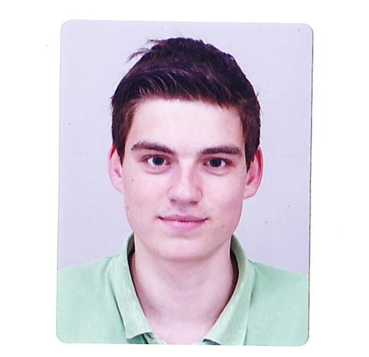

 Student Master Economics at Tilburg University
I'm a final-year Master Economics student at the Tilburg University, due to finish around july 2016. During my studies I've been developing myself in the field of economics with a special interest in macroeconomics and financial development and financial markets. Next to this I am taking part in a research group on banking. Combined with this I am working at the Rabobank as an advisor online customer interaction.
2015-Now Tilburg University Msc Economics, Tilburg The Netherlands
2015 Universidad Torcuato Di Tella Exchange program Bsc Economics and Business Economics, Buenos Aires Argentina
2012-15 Tilburg University BSc Economics and Business economics (Distinction), Tilburg The Netherlands
2008-12 Dr-knippenbergcollege VWO+ (+Latin and Spanish ), Helmond The Netherlands
2015-Now Advisor online customer interaction Rabobank Nederland, Tilburg
2012-2014 Logistic Employee Bavaria, Lieshout
Available on request.